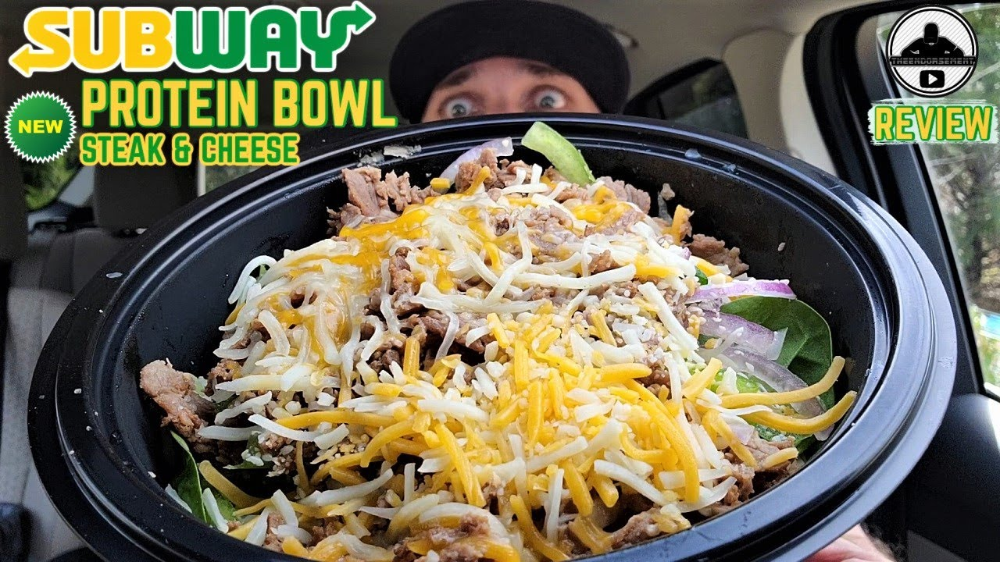

Protein Bowl

A delicious yet healthy bowl of beef and rice. Eating this will get you shredded within 3 months(consumers experience may vary). This bowl of chaos is made of lean ground beef and protein rich yogurt. This one is for all the gym bros out there. I am getting you fuckin ripped for the summer mate! Here are the ingredients we need to make magic!
- 99% lean beef
- Fade 0% fat greek yogurt
- Hot Sauce of your choice
- Taco or bbq seasoning of your choice
- White or brown rice
Do you guys see how simple the ingredients are. We are eating clean af and getting ripped af. Lets get it, follow these steps and build those muscles you have always dreamt about!
- Seared the ground beef and when it is almost done cooking toss in seasoning of choice
- Measure out one serving of greek yogurt into a bowl
- Toss in the hot sauce of your choice and adjust to taste
- Input the rice and mix that bitch up baby!!
With this you guys have just made one of the most healthy and amazing meals that is possible for gainz. Good luck boys and gals and may the protein gods be with you.